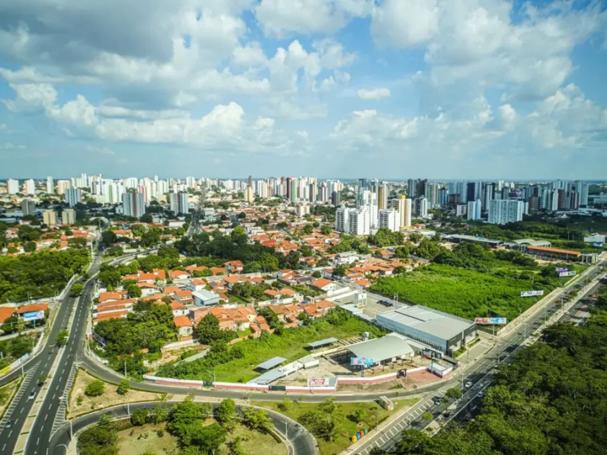

O estado do Piauí está localizado na região Nordeste do Brasil e é conhecido por suas paisagens naturais e rica cultura. Sua capital, Teresina, é a única capital nordestina que não fica no litoral. O Piauí abriga importantes atrações turísticas, como o Parque Nacional da Serra da Capivara, famoso pelas pinturas rupestres. A economia do estado é baseada na agricultura, pecuária, comércio e turismo.

Voltar